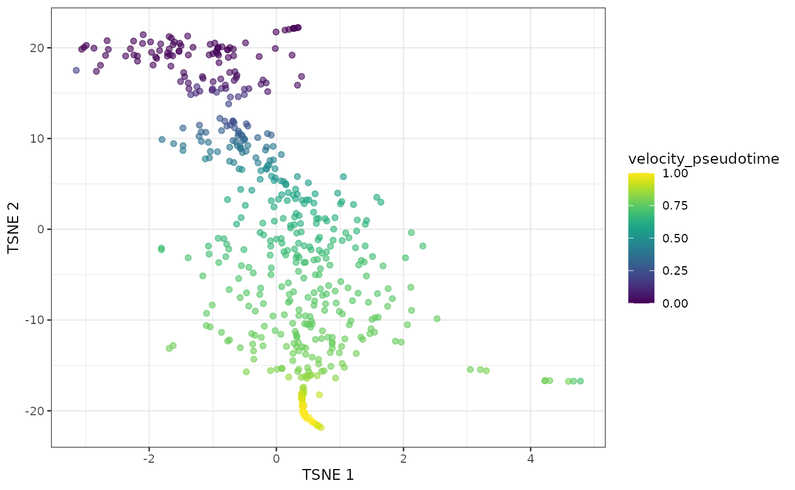
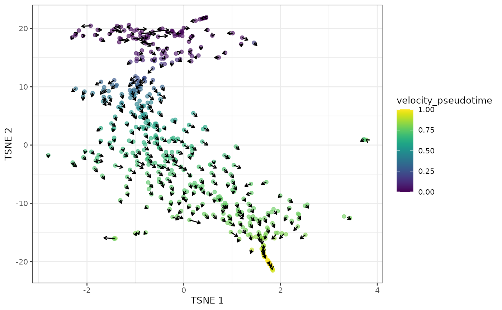

vignettes/userguide.Rmd
userguide.RmdThis package provides a lightweight interface between the Bioconductor SingleCellExperiment data structure and the scvelo Python package for RNA velocity calculations. The interface is comparable to that of many other SingleCellExperiment-compatible functions, allowing users to plug in RNA velocity calculations into the existing Bioconductor analysis framework. To demonstrate, we will use a data set from Hermann et al. (2018), provided via the scRNAseq package. This data set contains gene-wise estimates of spliced and unspliced UMI counts for 2,325 mouse spermatogenic cells.
library(scRNAseq) sce <- HermannSpermatogenesisData() sce
## class: SingleCellExperiment
## dim: 54448 2325
## metadata(0):
## assays(2): spliced unspliced
## rownames(54448): ENSMUSG00000102693.1 ENSMUSG00000064842.1 ...
## ENSMUSG00000064369.1 ENSMUSG00000064372.1
## rowData names(0):
## colnames(2325): CCCATACTCCGAAGAG AATCCAGTCATCTGCC ... ATCCACCCACCACCAG
## ATTGGTGGTTACCGAT
## colData names(1): celltype
## reducedDimNames(0):
## altExpNames(0):The full data set requires up to 12 GB of memory for the example usage presented in this vignette. For demonstration purposes, we downsample the data set to the first 500 cells. Feel free to skip this downsampling step if you have access to sufficient memory.
sce <- sce[, 1:500]
We assume that feature selection has already been performed by the user using any method (see here for some suggestions). We will use the log-expression method from the scran method here.
library(scuttle) sce <- logNormCounts(sce, assay.type=1) library(scran) dec <- modelGeneVar(sce) top.hvgs <- getTopHVGs(dec, n=2000)
We can plug these choices into the scvelo() function with our SingleCellExperiment object. Here, we will use the "spliced" count matrix as a proxy for the typical exonic count matrix. While this count matrix is not required for the velocity estimation in itself, it is used internally to retrieve the principal component space that is used by scvelo to find nearest neighbors. There are some subtle differences between the spliced count matrix and the typical exonic count matrix - see ?scvelo for some commentary about this - but the spliced counts are generally a satisfactory replacement. By default, scvelo() uses the steady-state approach to estimate velocities. The stochastic and dynamical models implemented in scvelo are accessible as well, by modifying the mode argument.
library(velociraptor) velo.out <- scvelo(sce, subset.row=top.hvgs, assay.X="spliced") velo.out
## class: SingleCellExperiment
## dim: 2000 500
## metadata(4): neighbors velocity_params velocity_graph
## velocity_graph_neg
## assays(6): X spliced ... Mu velocity
## rownames(2000): ENSMUSG00000117819.1 ENSMUSG00000081984.3 ...
## ENSMUSG00000022965.8 ENSMUSG00000094660.2
## rowData names(3): velocity_gamma velocity_r2 velocity_genes
## colnames(500): CCCATACTCCGAAGAG AATCCAGTCATCTGCC ... CACCTTGTCGTAGGAG
## TTCCCAGAGACTAAGT
## colData names(7): velocity_self_transition root_cells ...
## velocity_confidence velocity_confidence_transition
## reducedDimNames(1): X_pca
## altExpNames(0):The scvelo() function produces a SingleCellExperiment containing all of the outputs of the calculation in Python. Of particular interest is the velocity_pseudotime vector that captures the relative progression of each cell along the biological process driving the velocity vectors. We can visualize this effect below in a \(t\)-SNE plot generated by scater on the top HVGs.
library(scater) set.seed(100) sce <- runPCA(sce, subset_row=top.hvgs) sce <- runTSNE(sce, dimred="PCA") sce$velocity_pseudotime <- velo.out$velocity_pseudotime plotTSNE(sce, colour_by="velocity_pseudotime")

It is also straightforward to embed the velocity vectors into our desired low-dimensional space, as shown below for the \(t\)-SNE coordinates. This uses a grid-based approach to summarize the per-cell vectors into local representatives for effective visualization.
embedded <- embedVelocity(reducedDim(sce, "TSNE"), velo.out) grid.df <- gridVectors(reducedDim(sce, "TSNE"), embedded) library(ggplot2) plotTSNE(sce, colour_by="velocity_pseudotime") + geom_segment(data=grid.df, mapping=aes(x=start.1, y=start.2, xend=end.1, yend=end.2), arrow=arrow(length=unit(0.05, "inches")))

And that’s it, really.
scvelo() interally performs a PCA step that we can bypass by supplying our own PC coordinates. Indeed, it is often the case that we have already performed PCA in the earlier analysis steps, so we can just re-use those results to (i) save time and (ii) improve consistency with the other steps. Here, we computed the PCA coordinates in runPCA() above, so let’s just recycle that:
# Only setting assay.X= for the initial AnnData creation, # it is not actually used in any further steps. velo.out2 <- scvelo(sce, assay.X=1, subset.row=top.hvgs, use.dimred="PCA") velo.out2
## class: SingleCellExperiment
## dim: 2000 500
## metadata(4): neighbors velocity_params velocity_graph
## velocity_graph_neg
## assays(6): X spliced ... Mu velocity
## rownames(2000): ENSMUSG00000117819.1 ENSMUSG00000081984.3 ...
## ENSMUSG00000022965.8 ENSMUSG00000094660.2
## rowData names(3): velocity_gamma velocity_r2 velocity_genes
## colnames(500): CCCATACTCCGAAGAG AATCCAGTCATCTGCC ... CACCTTGTCGTAGGAG
## TTCCCAGAGACTAAGT
## colData names(7): velocity_self_transition root_cells ...
## velocity_confidence velocity_confidence_transition
## reducedDimNames(1): X_pca
## altExpNames(0):We also provide an option to use the scvelo pipeline without modification, i.e., relying on their normalization and feature selection. This sacrifices consistency with other Bioconductor workflows but enables perfect mimicry of a pure Python-based analysis. In this case, arguments like subset.row= are simply ignored.
velo.out3 <- scvelo(sce, assay.X=1, use.theirs=TRUE) velo.out3
## class: SingleCellExperiment
## dim: 54448 500
## metadata(5): pca neighbors velocity_params velocity_graph
## velocity_graph_neg
## assays(6): X spliced ... Mu velocity
## rownames(54448): ENSMUSG00000102693.1 ENSMUSG00000064842.1 ...
## ENSMUSG00000064369.1 ENSMUSG00000064372.1
## rowData names(4): velocity_gamma velocity_r2 velocity_genes varm
## colnames(500): CCCATACTCCGAAGAG AATCCAGTCATCTGCC ... CACCTTGTCGTAGGAG
## TTCCCAGAGACTAAGT
## colData names(11): initial_size_spliced initial_size_unspliced ...
## velocity_confidence velocity_confidence_transition
## reducedDimNames(1): X_pca
## altExpNames(0):Advanced users can tinker with the settings of individual scvelo steps by setting named lists of arguments in the scvelo.params= argument. For example, to tinker with the behavior of the recover_dynamics step, we could do:
velo.out4 <- scvelo(sce, assay.X=1, subset.row=top.hvgs, scvelo.params=list(recover_dynamics=list(max_iter=20))) velo.out4
## class: SingleCellExperiment
## dim: 2000 500
## metadata(4): neighbors velocity_params velocity_graph
## velocity_graph_neg
## assays(6): X spliced ... Mu velocity
## rownames(2000): ENSMUSG00000117819.1 ENSMUSG00000081984.3 ...
## ENSMUSG00000022965.8 ENSMUSG00000094660.2
## rowData names(3): velocity_gamma velocity_r2 velocity_genes
## colnames(500): CCCATACTCCGAAGAG AATCCAGTCATCTGCC ... CACCTTGTCGTAGGAG
## TTCCCAGAGACTAAGT
## colData names(7): velocity_self_transition root_cells ...
## velocity_confidence velocity_confidence_transition
## reducedDimNames(1): X_pca
## altExpNames(0):## R version 4.0.2 Patched (2020-09-17 r79226)
## Platform: x86_64-pc-linux-gnu (64-bit)
## Running under: Ubuntu 20.04.1 LTS
##
## Matrix products: default
## BLAS/LAPACK: /usr/lib/x86_64-linux-gnu/openblas-openmp/libopenblasp-r0.3.8.so
##
## locale:
## [1] LC_CTYPE=en_US.UTF-8 LC_NUMERIC=C
## [3] LC_TIME=en_US.UTF-8 LC_COLLATE=en_US.UTF-8
## [5] LC_MONETARY=en_US.UTF-8 LC_MESSAGES=C
## [7] LC_PAPER=en_US.UTF-8 LC_NAME=C
## [9] LC_ADDRESS=C LC_TELEPHONE=C
## [11] LC_MEASUREMENT=en_US.UTF-8 LC_IDENTIFICATION=C
##
## attached base packages:
## [1] parallel stats graphics utils stats4 methods base
##
## other attached packages:
## [1] scater_1.17.5 ggplot2_3.3.2
## [3] velociraptor_0.99.4 scran_1.17.16
## [5] scuttle_0.99.13 scRNAseq_2.3.13
## [7] SingleCellExperiment_1.11.7 SummarizedExperiment_1.19.6
## [9] DelayedArray_0.15.8 matrixStats_0.56.0
## [11] Matrix_1.2-18 Biobase_2.49.1
## [13] GenomicRanges_1.41.6 GenomeInfoDb_1.25.11
## [15] IRanges_2.23.10 S4Vectors_0.27.13
## [17] BiocGenerics_0.35.4 knitr_1.29
## [19] BiocStyle_2.17.0
##
## loaded via a namespace (and not attached):
## [1] Rtsne_0.15 ggbeeswarm_0.6.0
## [3] colorspace_1.4-1 ellipsis_0.3.1
## [5] rprojroot_1.3-2 bluster_0.99.1
## [7] XVector_0.29.3 BiocNeighbors_1.7.0
## [9] fs_1.5.0 farver_2.0.3
## [11] bit64_4.0.5 interactiveDisplayBase_1.27.5
## [13] AnnotationDbi_1.51.3 jsonlite_1.7.1
## [15] dbplyr_1.4.4 shiny_1.5.0
## [17] BiocManager_1.30.10 compiler_4.0.2
## [19] httr_1.4.2 dqrng_0.2.1
## [21] basilisk_1.1.16 backports_1.1.10
## [23] assertthat_0.2.1 fastmap_1.0.1
## [25] limma_3.45.14 later_1.1.0.1
## [27] BiocSingular_1.5.0 htmltools_0.5.0
## [29] tools_4.0.2 rsvd_1.0.3
## [31] igraph_1.2.5 gtable_0.3.0
## [33] glue_1.4.2 GenomeInfoDbData_1.2.3
## [35] dplyr_1.0.2 grDevices_4.0.2
## [37] rappdirs_0.3.1 Rcpp_1.0.5
## [39] pkgdown_1.6.1 vctrs_0.3.4
## [41] ExperimentHub_1.15.3 zellkonverter_0.99.4
## [43] DelayedMatrixStats_1.11.1 xfun_0.17
## [45] stringr_1.4.0 mime_0.9
## [47] lifecycle_0.2.0 irlba_2.3.3
## [49] statmod_1.4.34 AnnotationHub_2.21.5
## [51] edgeR_3.31.4 zlibbioc_1.35.0
## [53] scales_1.1.1 basilisk.utils_1.1.10
## [55] ragg_0.3.1 promises_1.1.1
## [57] yaml_2.2.1 curl_4.3
## [59] memoise_1.1.0 reticulate_1.16
## [61] gridExtra_2.3 datasets_4.0.2
## [63] stringi_1.5.3 RSQLite_2.2.0
## [65] BiocVersion_3.12.0 desc_1.2.0
## [67] filelock_1.0.2 BiocParallel_1.23.2
## [69] cpp11_0.2.1 rlang_0.4.7
## [71] pkgconfig_2.0.3 systemfonts_0.3.1
## [73] bitops_1.0-6 evaluate_0.14
## [75] lattice_0.20-41 purrr_0.3.4
## [77] labeling_0.3 bit_4.0.4
## [79] tidyselect_1.1.0 magrittr_1.5
## [81] bookdown_0.20 R6_2.4.1
## [83] generics_0.0.2 DBI_1.1.0
## [85] pillar_1.4.6 withr_2.2.0
## [87] RCurl_1.98-1.2 tibble_3.0.3
## [89] crayon_1.3.4 BiocFileCache_1.13.1
## [91] rmarkdown_2.3 viridis_0.5.1
## [93] locfit_1.5-9.4 grid_4.0.2
## [95] blob_1.2.1 digest_0.6.25
## [97] xtable_1.8-4 httpuv_1.5.4
## [99] munsell_0.5.0 viridisLite_0.3.0
## [101] beeswarm_0.2.3 vipor_0.4.5